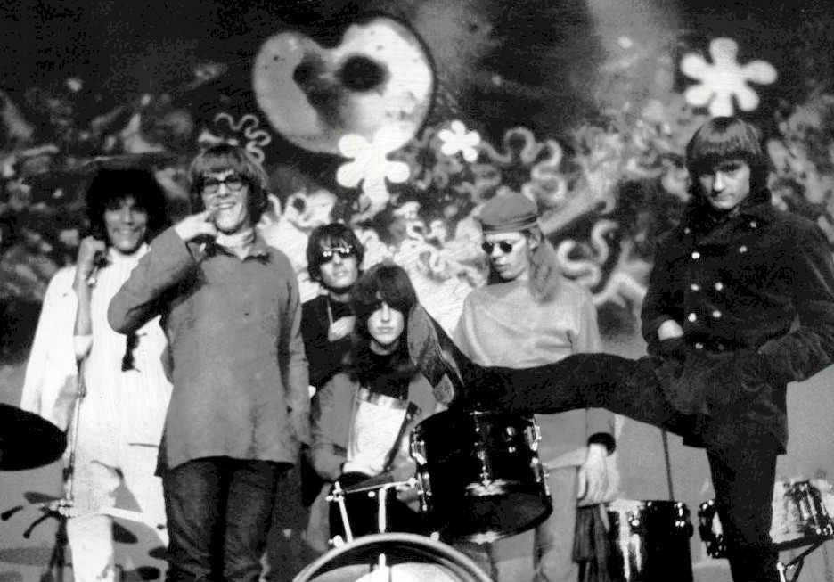

Wooden Ships by Jefferson Airplane is a six-and-a-half-minute vision of nuclear war, released on Volunteers in November 1969.
Paul Kantner wrote it in 1968 with David Crosby and Stephen Stills, on Crosby's boat in Florida.
Crosby, Stills & Nash released it first, and the Airplane answered with a darker, heavier take.

Table of Contents
- Written on David Crosby's Boat
- The Credit Kantner Couldn't Take
- The Airplane Recording
- What the Song Is About
- Two Versions Compared
- Woodstock and Legacy
- FAQ
Written on David Crosby's Boat
In 1968, David Crosby kept a schooner called the Mayan docked in Fort Lauderdale, Florida.
"I had been unceremoniously tossed out of the Byrds, and I had some time on my hands," he told Rolling Stone.
Paul Kantner and Stephen Stills came aboard, and the three jammed in the main cabin on chord changes Crosby had played for years.
Kantner and Stills wrote most of the words, a few verses each.
Crosby demoed the melody alone in March 1968, and Stills cut a demo with most of the words the next month.
That Stills tape came out in 2007 on Just Roll Tape.
The Credit Kantner Couldn't Take
Crosby, Stills & Nash recorded the song on February 20, 1969, at Wally Heider's studio in Hollywood.
Their debut album came out on May 29, 1969, and Kantner's name was missing from the credits.
He was fighting the Airplane's original manager, Matthew Katz, in court.
Katz was freezing anything with Kantner's name on it, so Crosby left it off.
Later pressings fixed the credit, and Crosby said they "evened things up with him with a whole mess of cash when the record went huge."
How Wooden Ships by Jefferson Airplane Was Recorded
The Jefferson Airplane cut their version on April 14 and 22, 1969.
The sessions ran at Wally Heider's new 16-track studio in San Francisco, with Al Schmitt producing.
Who Plays on It
- Grace Slick, Paul Kantner and Marty Balin trade the lead vocals
- Jorma Kaukonen on lead guitar, Jack Casady on bass, Spencer Dryden on drums
- Session pianist Nicky Hopkins adds piano
- David Crosby is credited with the sailboat sounds at the start
The track runs 6:24, and its words and melody differ slightly from the CSN cut.
RCA fought the band over the album's lyrics and artwork, which pushed Volunteers from August to November 1969.
What the Song Is About
The song was written during the Vietnam War, at a tense point in the Cold War.
It pictures the few survivors of a nuclear war sailing away on boats made of wood, with no metal to turn radioactive.
Two strangers from opposite sides meet, and one asks who won, but nobody answers.
Crosby said the "silver people on the shoreline" were guys in radiation suits.
The liner notes say the writers "imagined ourselves as the few survivors, escaping on a boat to create a new civilization."
Kantner came back to that escape idea on his 1970 concept album Blows Against the Empire.
Two Versions Compared
| Crosby, Stills & Nash | Jefferson Airplane | |
|---|---|---|
| Recorded | February 20, 1969 | April 14 and 22, 1969 |
| Studio | Wally Heider, Hollywood | Wally Heider, San Francisco |
| Released | May 29, 1969 | November 1969 |
| Album | Crosby, Stills & Nash | Volunteers |
| Length | 5:29 | 6:24 |
| Producer | Crosby, Stills and Nash | Al Schmitt |
Rolling Stone critic Ed Ward heard the Airplane take as "more of a scream of desperation" than the CSN version.
Ultimate Classic Rock ranks it the band's fifth-best song, saying it better captures the dread facing the survivors.
Woodstock and Legacy
Both bands played the song at Woodstock in August 1969.
The film used the CSNY take, which became the famous one.
The Airplane played early on Sunday morning, and its Wooden Ships ran past 21 minutes.
That performance stayed in the vault until the 2009 Woodstock Experience set.
Volunteers reached No. 13 on the Billboard album chart and went gold within two months.
Answer Songs
- Jackson Browne asked Crosby about the people left on shore, and wrote "For Everyman" in 1973 as a reply
- Neil Young looked back in 1986's "Hippie Dream," singing that the wooden ships were just a hippie dream
It is one of the defining tracks of 1969.
For the wider sound around it, see our 1960s psychedelic rock guide.
FAQ
Who wrote Wooden Ships?
David Crosby wrote the music.
Paul Kantner and Stephen Stills wrote most of the lyrics, in 1968, on Crosby's boat in Fort Lauderdale.
Who recorded it first, CSN or Jefferson Airplane?
Crosby, Stills & Nash released it first, on their debut album on May 29, 1969.
The Airplane's version followed on Volunteers in November 1969.
Why wasn't Paul Kantner credited on the CSN album?
Kantner was in a legal fight with manager Matthew Katz, who was freezing anything with his name on it.
Crosby credited and paid him later.
Did Jefferson Airplane play it at Woodstock?
Yes.
Their 21-minute Woodstock version stayed unreleased until 2009.
Wikipedia's entry on the song has the full prelude lyric.
Then head back to the 1960smusic.net homepage, but first put on Wooden Ships by Jefferson Airplane one more time.